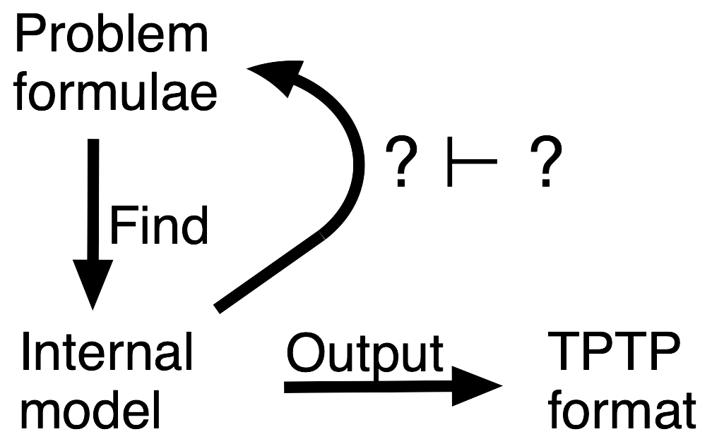
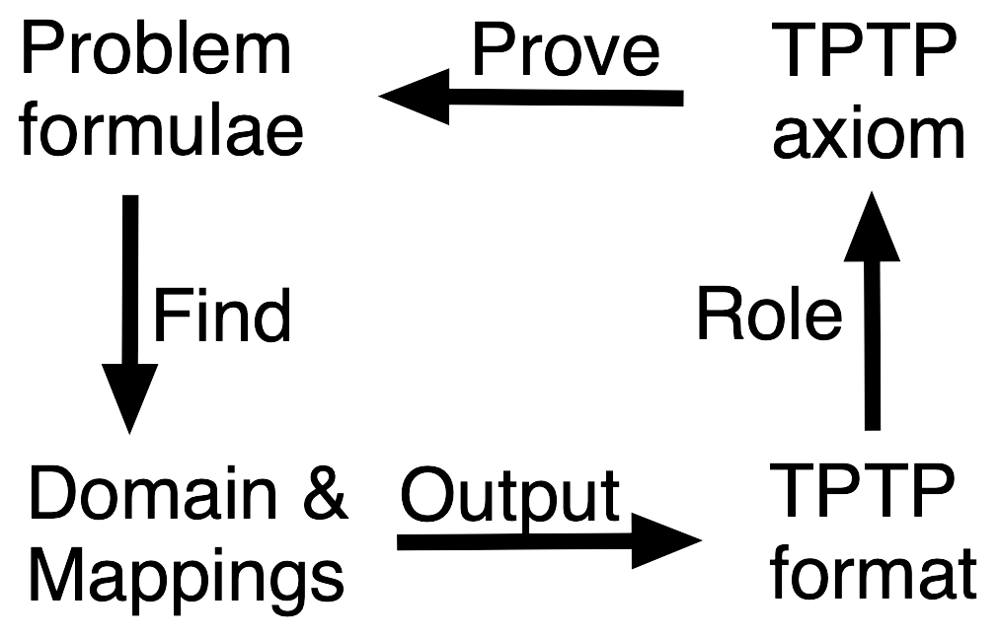
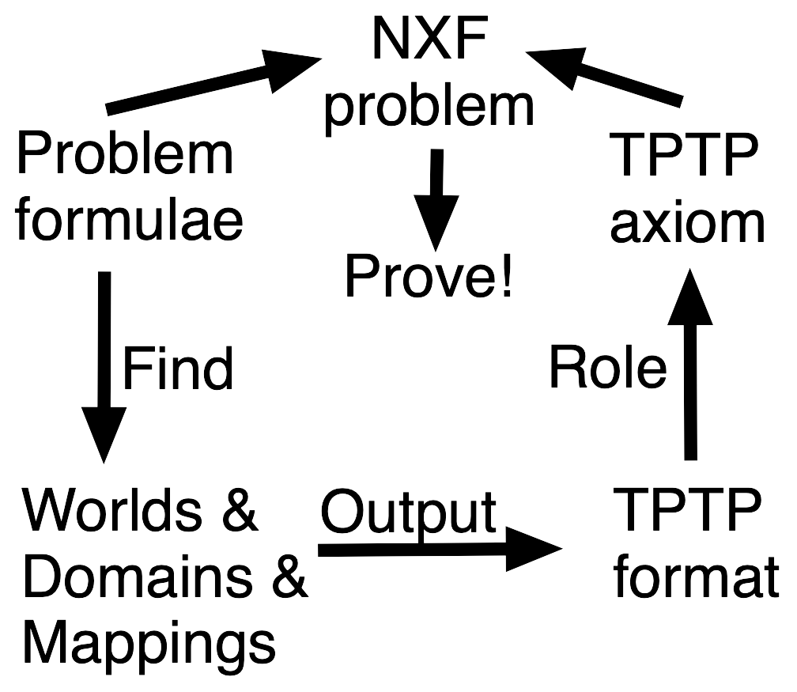

AGMV - Semantic Model Verification

What, Why, How?
- Incompleteness, Soundness, Correctness
- Complexity and experience indicates bugs
Tarskian Model Verification

- The complete method ...
- Check syntax and satisfiability of the model
- Combine model, each problem axiom/~conjecture as a conjecture
- Prove each with a trusted theorem prover
- Works because ...
if
TPTP axiom ⊨ Problem formulae
then
Domain & mappings ⊢ Problem formulae.
- Works for all types of model
(including saturations - 89% success with Vampire/E saturations)
Kripke Model Verification

- Check syntax and satisfiability of the model
- Combine logic specification, types, model, all problem axioms and ~conjecture as conjectures
- Convert to a NXF proof problem
- Prove it with a trusted (modal) theorem prover